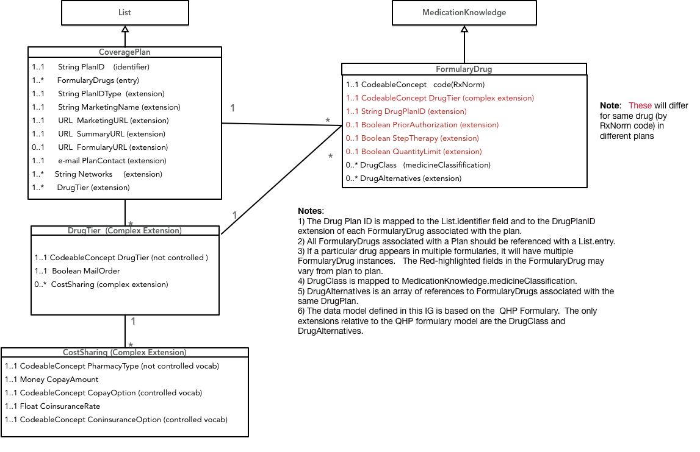
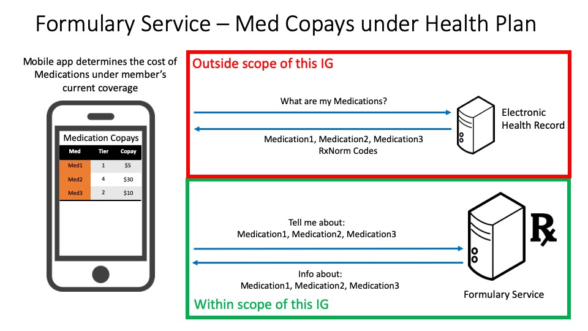
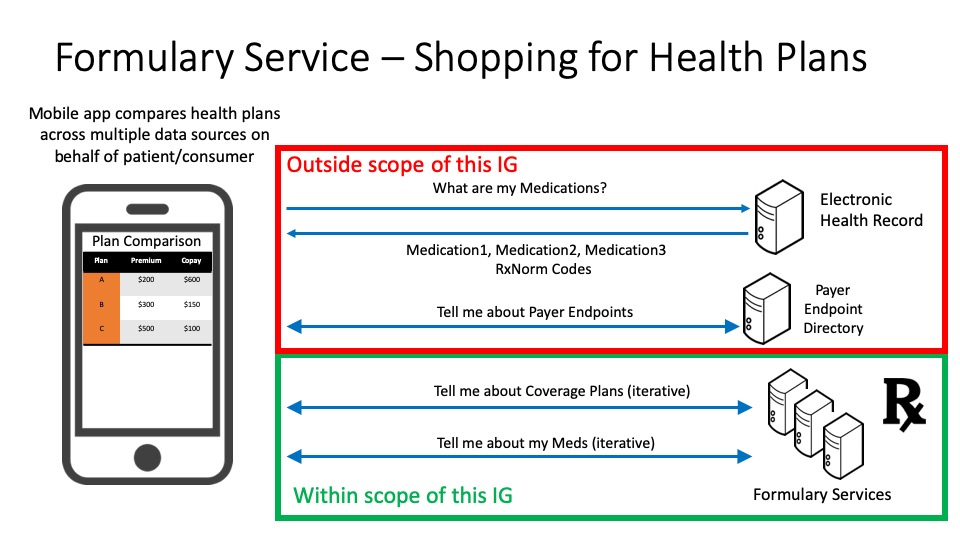

This project defines a FHIR interface to a health insurer's drug formulary information for patients/consumers. A drug formulary is a list of brand-name and generic prescription drugs a health insurer agrees to pay for, at least partially, as part of health insurance coverage. Drug formularies are developed based on the efficacy, safety and cost of drugs. The primary use cases for this FHIR interface enable consumers/patients to understand the costs and alternatives for drugs that have been prescribed, and to compare their drug costs across different insurance plans.
This implementation guide (IG) consists of 2 FHIR profiles, along with associated extensions, value sets.
Formularies in the United States are normally published by health insurers on an annual basis, with minor updates during the year.
Insurers regularly administer multiple health plans and each of those plans may have its own formulary.
Each formulary contains a list of drugs. Drugs are placed into tiers that largely determine the cost to the consumer/patient. The number and purpose of drug tiers varies across payers. Each tier has an associated cost-sharing model that includes deductibles and/or coinsurance components for drugs in the tier when purchased through various pharmacy types.
In addition to the drug tier, drugs may also list requirements on the patient (e.g., or gender) or limitations on prescription (e.g., prior authorization).
This Implementation Guide closely follows the formulary information model of the formularies for Qualified Health Plans (QHPs) on the federal health insurance marketplace for healthcare.gov. Publishing formularies in the QHP format should be familiar to many payers. Drugs are specified by RxNorm codes of prescribable drugs, as constrained by the US Core Medication Codes value set. The QHP data model mandates specific value sets for some data types (e.g., types of copayments), but leaves value sets for other data types at the discretion of the payer (e.g., drug tier identifiers, pharmacy types). and does not include data that is fairly standard across formularies (drug classifications, alternative drugs). The only areas where this Implementation Guide extends beyond the QHP formulary information model is the addition of DrugClass and DrugAlternatives to FormularyDrug.
The following object model shows the relationships between the resources in the current IG.  A FormularyDrug is represents the availability of a drug with a specific RxNorm code within the tier structure and prescribing constraints of a specific coverageplan. If a FHIR endpoint provides data on multiple CoveragePlans, querying for FormularyDrugs by their RxNorm could would return multiple entries. Each of these FormularyDrugs could associate the drug to a distinct tier in the associated plan, with plan-specific prescribing constraints. The CoveragePlan identifier field and the FormularyDrug planID extension field associate a FormularyDrug with a CoveragePlan.This Implementation Guide is intended for insurers within the United States. Currently, many insurers make their formularies available to patients using PDFs or drug search forms on their websites. Providing formularies using FHIR may allow patients to more easily comparison-shop between plans and could help insurers educate consumers about the differences between various drug tiers/classes.
This use case allows a patient to determine the out-of-pocket cost of each of their medications under their current health plan. The mobile application queries the electronic health record system to retrieve the list of medications for the patient (note that this is outside of the scope of this Implementation Guide) The mobile application queries the formulary service for cost information about the drugs that the patient takes and provides the out-of-pocket cost for each medication under the patient's current health plan
This use case allows a patient to compare several different health plans and determine which plan has the lowest out-of-pocket cost, personalized to the patient's set of medications. The mobile application queries the electronic health record system to retrieve the list of medications for the patient (note that this is outside of the scope of this Implementation Guide) and gets a list of payers and their FHIR endpoints from a payer endpoint directory service. For each payer, the mobile application queries the payer's formulary service to retrieve the list of health plans provided by that payer and the medication costs for each plan, specific to the patient's set of medications. Finally, the mobile application displays a comparison for the out-of-pocket costs for each prospective health plan, personalized for particular medication needs of the patient.

GET [base]/List?_profile=http://hl7.org/fhir/us/Davinci-drug-formulary/StructureDefinition/usdf-CoveragePlan
For each CoveragePlan, the PlanID is mapped to the List.identifier field. The value of List.identifier is the most general way to query the FormularyDrugs that are part of a specific plan.
To find the CoveragePlan for a plan with id 'myPlanID':
GET [base]/List?_profile=http://hl7.org/fhir/us/Davinci-drug-formulary/StructureDefinition/usdf-CoveragePlan&identifer=myPlanID
To find all FormularyDrugs in a CoveragePlan for a plan with id 'myPlanID':
GET [base]/MedicationKnowledge?_profile=http://hl7.org/fhir/us/Davinci-drug-formulary/StructureDefinition/usdf-FormularyDrug&DrugPlan=myPlanID
Alternatively, these FormularyDrugs are also in the array of entries that is part of the List.
To find all FormularyDrugs in the GENERIC tier of plan myPlanID:
GET [base]/MedicationKnowledge?_profile=http://hl7.org/fhir/us/Davinci-drug-formulary/StructureDefinition/usdf-FormularyDrug&DrugPlan=planID&DrugTier=GENERIC
GET [base]/MedicationKnowledge?_profile=http://hl7.org/fhir/us/Davinci-drug-formulary/StructureDefinition/usdf-FormularyDrug&DrugPlan=planID&code=myCode
GET [base]/MedicationKnowledge?_profile=http://hl7.org/fhir/us/Davinci-drug-formulary/StructureDefinition/usdf-FormularyDrug&code=myCode
There may be brand or generic alternatives to a particular drug in the formulary. The QHP formulary information model, does not include drug alternatives. The current Implementation Guide provides for each FormularyDrug to include an array of references to other FormularyDrugs within the same CoveragePlan. There may be better ways to represent equivalence classes among FormularyDrugs using the DrugClass.
Drug tiers are not standardized. The current Implementation Guide provides a defined, but extensible value set for tier identifiers based on the example list in the QHP formulary specification. A move towards standardization might make this data more useful for clients of the interface.
Within a consumer-facing drug formulary the primary use of drug classification is enable hierarchical browsing of the formulary contents from a therapeutic disease area (e.g., hypertension) or pharmacologic action (e.g., beta blocker) perspective. An empirical review of web/PDF-based drug formularies found variety of different hierarchies being used to present the formulary to consumers. The current IG suggests the utility of using the MedicationKnowledge medicineClassification field to provide drug classification information, but does not specify a particular vocabulary. This might be a fruitful area for subsequent standardization.
Pharmacy types are not standardized. The current Implementation Guide provides a defined value set for tier identifiers based on the example list in the QHP formulary specification which mixes channels (retail and mail order) with quantity prescribed (1 month, 3 month, etc). A move towards standardization might make this data more useful for clients of the interface.
There is no single, authoritative indentifier that can be associated with a formulary (e.g., like NPI numbers identify providers in the United States). How can unique formulary IDs be provisioned such that they can be implemented consistently by all payers and referenced by other entities (e.g., health plans)? The NCPDP Formulary and Benefits eRx implementation guide requires an identifier for each formulary. Perhaps that can be leveraged. Similarly, how can a client application find the endpoint for a particular formulary? Is a directory of formularies needed?
| Name | |
|---|---|
| Saul A. Kravitz | saul@mitre.org |
| May Terry | mayt@mitre.org |
| Chris Klesge | cklesges@mitre.org |